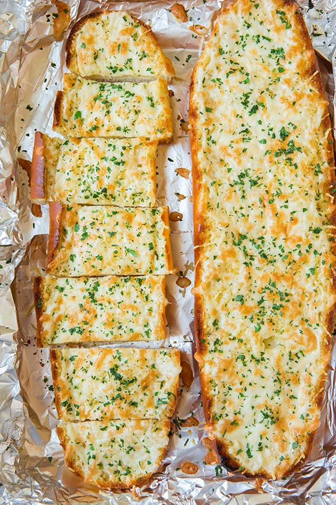

Garlic Bread

Description
This recipe will take you through the steps of creating
a very simple garlic bread with only 3 ingredients. Although pictured, cheese will not be present in this recipe.
Ingredients
- Garlic
- Any Type of Bread (I prefer a french baguette from Aldi)
- Butter/Butter Spray/Margarine
Steps
- Preheat the oven to 400 degrees farenheit
- Cut the baguette in half horizontally
- Generously butter the inner side of each baguette half
- Peel and finely dice your garlic (I prefer roughly 1 clove per half
- Spread the garlic evenly on each bread half then place in the oven
- While cook time various from bread to bread, I prefer a light toast of about 4-6 minutes